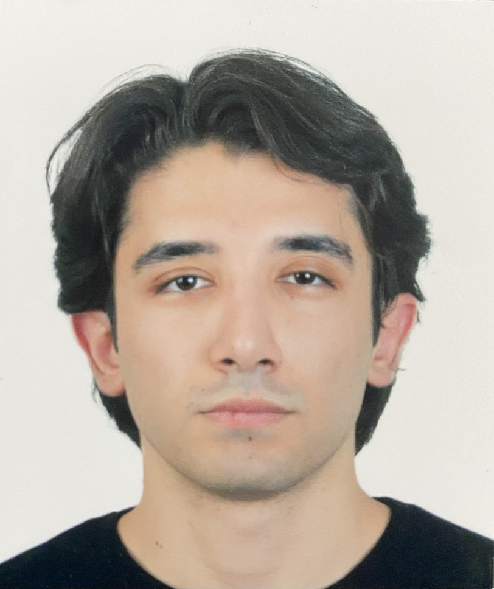

I am a 4th-year Software Engineering student at Izmir University of Economics. I have a strong foundation in modern web technologies, AI integrations, and IT infrastructure. I specialize in building end-to-end applications using Java (Spring Boot), React, and Python. I am highly motivated to design scalable architectures and deploy AI-driven solutions in professional environments.
İzmir Ekonomi Üniversitesi'nde 4. sınıf Yazılım Mühendisliği öğrencisiyim. Modern web teknolojileri, yapay zeka entegrasyonları ve IT altyapıları konularında güçlü bir temele sahibim. Java (Spring Boot), React ve Python kullanarak uçtan uca uygulamalar geliştiriyorum. Ölçeklenebilir mimariler tasarlamaya ve yapay zeka odaklı çözümleri profesyonel ortamlarda uygulamaya büyük ilgi duyuyorum.
An intelligent, RAG-powered academic advisor CLI application built for the IUE Engineering Faculty. It automates curriculum data scraping, processes it into a Chroma vector database using Generative AI embeddings, and answers student queries via the Gemini 2.5 Pro LLM with strict context boundaries.
İEÜ Mühendislik Fakültesi için geliştirilmiş, RAG tabanlı akıllı akademik danışman. Müfredat verilerini otomatik olarak çeker, üretken yapay zeka embeddingleri ile Chroma vektör veritabanına işler ve öğrencilerin sorularını Gemini 2.5 Pro LLM üzerinden yanıtlar.
A comprehensive, end-to-end e-commerce web application. The robust backend is built with Spring Boot, serving a highly interactive and modern frontend developed in React. The project utilizes Docker for containerization and ensures a scalable architecture.
Kapsamlı ve uçtan uca bir e-ticaret web uygulaması. Güçlü arka yüzü Spring Boot ile oluşturulmuş olup, React ile geliştirilen interaktif ve modern bir ön yüze hizmet vermektedir. Proje, Docker kullanılarak konteynerize edilmiş ve ölçeklenebilir bir mimaride tasarlanmıştır.
A mood-based music recommendation system utilizing a Client-Server architecture. Features a Java Swing GUI, real-time weather integration via Open-Meteo API, and a Python data pipeline for processing Spotify datasets.
İstemci-Sunucu (Client-Server) mimarisi kullanan, duygu durumuna dayalı müzik öneri sistemi. Java Swing arayüzü, Open-Meteo API ile anlık hava durumu entegrasyonu ve Spotify veri setlerini işlemek için Python tabanlı bir veri hattı (pipeline) içerir.
Utilized Motadata for infrastructure monitoring and IT operations. Developed and integrated custom Python-based plugins to extend Motadata's monitoring capabilities. Automated system alerts and performance reporting processes.
Altyapı izleme ve IT operasyonları için Motadata kullandım. Motadata'nın izleme yeteneklerini genişletmek için Python tabanlı özel eklentiler (plugin) geliştirdim ve entegre ettim. Sistem uyarılarını ve performans raporlarını otomatikleştirdim.
Provided technical support by managing hardware and software configurations within the IT department. Collaborated with the team to maintain network security and optimize system performance.
IT departmanı bünyesinde donanım ve yazılım konfigürasyonlarını yöneterek teknik destek sağladım. Ağ güvenliğini korumak ve sistem performansını optimize etmek için ekiple işbirliği yaptım.